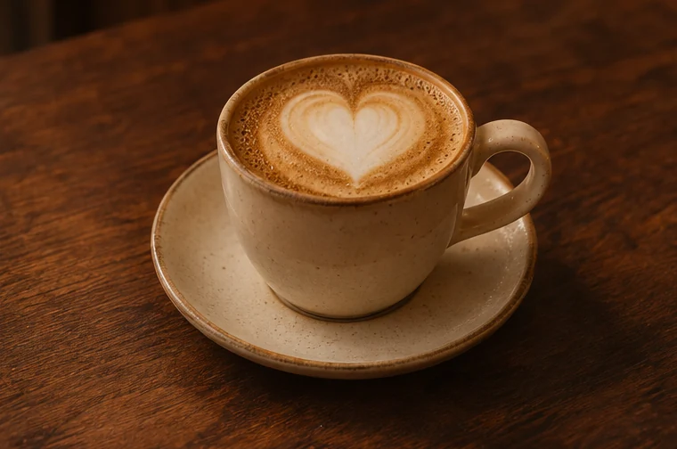
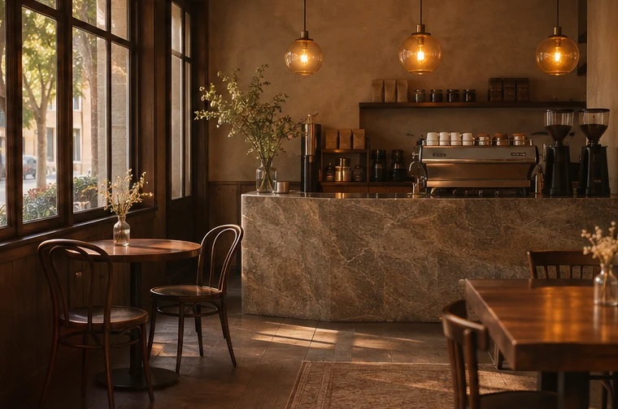

Капучино
290 ₽Двойной эспрессо и нежная молочная пена.
250 МЛЗаходите за любимым кофе, тёплой выпечкой
и минутой для себя.

Утром у нас пахнет свежим кофе и круассанами. За стойкой готовим эспрессо и фильтр, а у окна можно сесть с книгой или встретиться с друзьями.
Если спешите, возьмите кофе с собой. Если есть время, подскажем, что попробовать, и найдём вам чашку по вкусу.
Спланировать визитСохраните ориентир и выберите удобное время, чтобы заглянуть на чашку кофе.
Москва, район Чистых прудов
Ориентир — метро «Чистые пруды»График приведён для примера. Точный адрес кофейни и контакты уточняются.